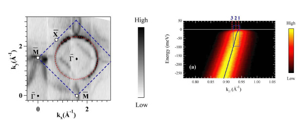

固体中における多体相互作用の解明
光電子分光は固体内部の電子を取り出し、固体電子がもつエネルギー E、運動量 k を直接観測することのできる実験手法である。近年は、パルスレーザーを用いた時間分解光電子分光法から時間 t と空間 r の空間分布を、スピン分解光電子分光法によってスピン ξ を分離観測する挑戦も行われている。このように、光電子分光法は固体の電子物性を理解するうえで強力な実験手法となる。光電子分光におけるエネルギー分解能に注目してみよう。日本国内でシンクロトロン放射光を利用した光電子分光実験が始まった 1980 年頃の分解能は約 0.3 eV 程度であったが、30 年が経った現在では 1 meV を切るほどに急速に向上した [1,2]。分解能の向上とともに、今までは観測するのが困難であった単体金属の微小な超伝導ギャップやバンド分散、フェルミ面の形状の直接観測が可能となり、多くの研究者が精力的に研究を行っている。
光物性研究室では、広島大学放射光科学研究センター (HiSOR) BL-1 においてシンクロトロン放射光を用い、高分解能の角度分解光電子分光法を行っている。単体金属のフェルミ面形状やバンド分散の直接観測を通して、固体内部の電子がどのような相互作用を受けているのかを明らかにしている。

Al (100) 面のフェルミ面のマッピングと角度分解光電子スペクトル
Al (100) 面のフェルミ面のマッピングと角度分解光電子スペクトル
上に挙げた図は、模範的な自由電子金属として知られる、アルミニウム Al (100) 単結晶試料のフェルミ面と角度分解光電子スペクトルを示している。Γbar 点を中心とし、表面に由来するフェルミ面を観測することに成功した。フェルミ準位を横切るバンド分散の ~ 30 meV 付近にバンド分散の折れ曲がり構造が存在し、電子が強い多体相互作用を受けていることが明らかとなった。自己エネルギーを考慮したスペクトル関数による解析によって、その相互作用は電子−格子相互作用が電子−電子相互作用よりも約 10 倍以上強く働いていることを明らかにした。
J. Jiang et al., e-J. Surf. Sci. Nanotech. 7, 57-60 (2009)
参考文献
[1] Guodong Liu et al., Rev. Sci. Instrum. 79, 023105 (2008)
[2] T. Kiss et al., Rev. Sci. Instrum. 79, 023106 (2008)